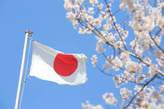
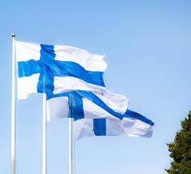

345,426,571
27.36 trillion U.S. dollars
The U.S. is a country of 50 states covering a vast swath of North America, with Alaska in the northwest and Hawaii extending the nation’s presence into the Pacific Ocean. Major Atlantic Coast cities are New York, a global finance and culture center, and capital Washington, DC. Midwestern metropolis Chicago is known for influential architecture and on the west coast, Los Angeles' Hollywood is famed for filmmaking.
124,370,947
$6.287 trillion dollars
Japan is an island country in East Asia. It is located in the Pacific Ocean off the northeast coast of the Asian mainland, and is bordered on the west by the Sea of Japan and extends from the Sea of Okhotsk in the north to the East China Sea in the south.
5.556 million (2022)
282.9 billion U.S. dollars (2022)
Finland is a Northern European nation bordering Sweden, Norway and Russia. Its capital, Helsinki, occupies a peninsula and surrounding islands in the Baltic Sea. Helsinki is home to the 18th-century sea fortress Suomenlinna, the fashionable Design District and diverse museums. The Northern Lights can be seen from the country's Arctic Lapland province, a vast wilderness with national parks and ski resorts.
